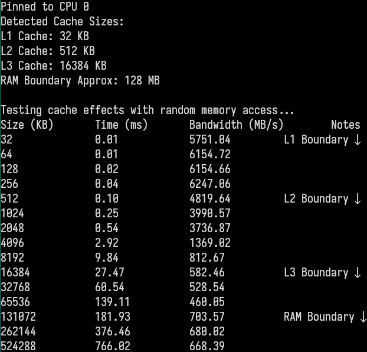

Benchmarking Random Access: Cache Effects
In order to explore the effects of memory hierarchy on computation speed, I conducted an experiment benchmarking the time taken to access data across various cache sizes. As the data size increases, it progresses through different levels of the memory hierarchy: from the fast L1 cache to the slower L2 and L3 caches, and eventually spilling over into the RAM. Results clearly demonstrate that as data ascends through these memory levels, there is a consistent decline in bandwidth. This pattern is not only observable but also critical in understanding why programs that are optimized to make the best use of CPU caches perform significantly better. By ensuring that our data structures take advantage of the faster cache memory, we can achieve at least 10x performance improvements in practice.
Random Access Benchmark Results
Benchmarking randomised insertions into Vector/List
Given this knowledge, I benchmarked random insertions into two different containers: std::vector and std::list. This allowed us to directly observe the practical performance differences that emerge when memory locality plays a significant role. As expected, the results reinforce the importance of data structure layout in memory, where contiguous memory structures such as vectors perform much better due to their locality. Non-contiguous data structures like lists, while flexible, incur significantly higher overhead during insertion due to their scattered memory access patterns.